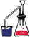
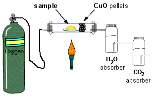

|  | Combustion Analysis Apparatus |
| The combustion analysis apparatus is a relatively simple device that has been used for many years to successfully determine empirical formulas for compounds that react with oxygen to form carbon dioxide, CO2, and water, H2O. Other products can also be formed. | |
|  | In combustion analysis, a known mass of a compound (with an unknown formula but known elemental makeup) is burned in an excess of oxygen gas. The combustion takes place in a closed tube through which oxygen is passed. The tube is heated to cause the combustion reaction to occur. The carbon and hydrogen present in the compound are converted into carbon dioxide (CO2) and water (H2O). Since oxygen is flowing through the tube, these products are carried out of the reaction tube. During this stage the gases pass over pellets of copper (II) oxide, CuO. The CuO serves to oxidize traces of carbon, C, and carbon monoxide, CO, formed during the combustion process to carbon dioxide, CO2. It also ensures that all of the hydrogen is oxidized completely to form water, H2O. |
|
The water is collected in an absorber filled with magnesium perchlorate, Mg(ClO4)2. The change in mass of this absorber is monitored; this mass change is equal to the mass of water produced during the combustion process. The carbon dioxide is collected in a separate absorber filled with sodium hydroxide, NaOH. The change in mass of this absorber is equal to the mass of carbon dioxide produced during the combustion process.
If the compound contains a third element--for example, N or O--the mass of that element can be determined by the difference between the mass of compound combusted and the sum of the masses of the carbon in the carbon dioxide and hydrogen in the water. The masses of the C and H are found using stoichiometric calculations. |
|